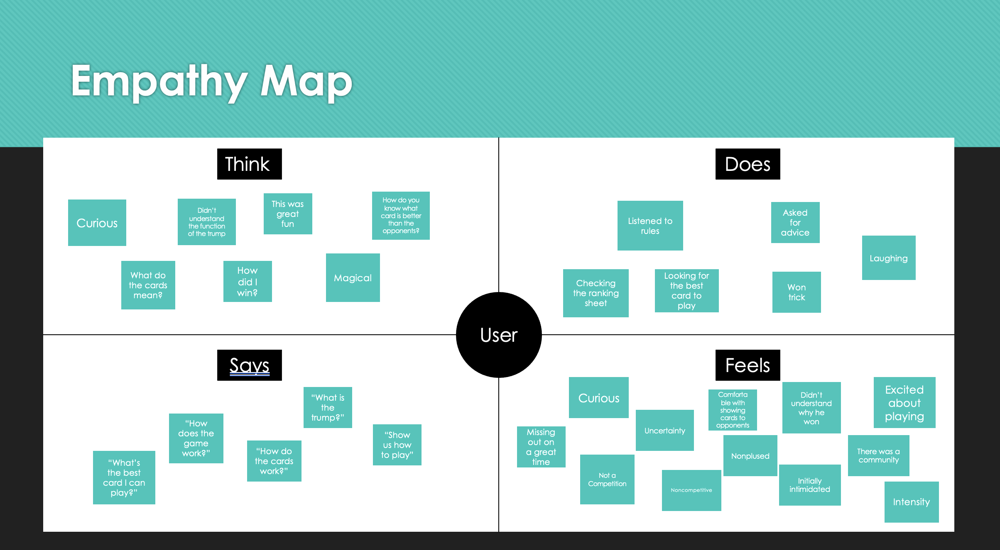
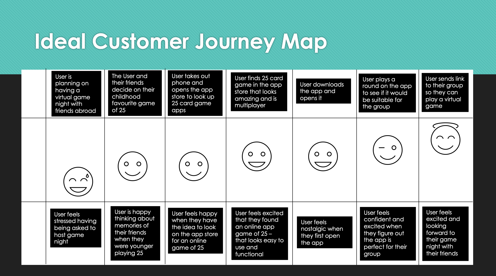

Play25 Online
bringing the traditional irish card game 25 back to life
design phase: empathy & define (part 1/3)
platform: mobile application
client briefthe visionwe want to build the ultimate home for 25 - an online version of the game that is great for beginners and veterans alike.a haven where beginners can learn, safe in the knowledge that they will not have obscenities screamed at them for playing the wrong card at the wrong time. and then the others - those who are experts and those that think they are experts! we will be offering members an online place to learn and play on any internet connected phone, tablet or pc. |
there will be options for public and private rooms. daily, weekly and all-time leader boards will provide excellent bragging rights for best in the county, country or world.
private rooms will have the option for open chat - after all, what fun is there if you can't tell John what you thought of him not "playing for the table". our vision is to be the most comprehensive, all-inclusive go-to site for 25. to make this happen we need people. Lots and lots of people. We are aiming for at least 10,000 members so that when you go online there is a vibrant community waiting to play. let's be clear here - we are not just looking to build a niche online game - we want to build a community that is big enough and active enough to keep 25 alive - and let it take its rightful place amongst the great card games of the world. |
client goalsthe game is already in a closed beta. we have been playing with friends and family for months, so the core of the game is already good.the groundwork for Play25 Online is already in place, people have been playing for months, and feedback extremely positive, but there is still work to do. additional development is required to build the infrastructure for public and private rooms, leader boards and competitions. as we develop the online product, we want to offer regular competitions and introduce inter-county and all ireland championships and already have our sights set on hosting the inaugural 25 world cup. |
problem definitionproject vision the task is to create a virtual community through the card game - 25. we want to make it immersive, fun and with a welcoming atmosphere that's for both beginners and advanced. |
project scope
|
project delivery
as part of our desk research, we had to teach others how to play the game, this is to show how you'd create a tutorial when designing the game. so, it's accessible to beginners and advanced player alike. |
stakeholder interview1. How far would you like us to go with the offering, e.g. would you like us to consider AR and AI to future proof the product Sky's the limit if the team has time and ideas. I have no idea how AR would work (or budget to do it), but would be curious to hear ideas. As for AI, I have thought about looking into machine learning to see if I could train a computer to play - it could make for a serious bot (see below)2. How did you initially build the game's community, e.g. Facebook, media etc?** I ran some Facebook ads when I was doing the Kickstarter back in 2015 (I think). During that time I also had a bunch of radio interviews (I think we were on Sligo radio), a couple of newspaper articles. I have a Facebook page (https://www.facebook.com/play25online) and I post there from time to time. After that it's just word of mouth. I am not super active (or talented) and promoting it, but will do so with renewed vigour if I can get a new version up and running 3. Where did sign-ups come from? Here are the top 10 countries I have users from (not sure if India users are legit)
|
4. As some players use specific 'house' rules, would the idea of same be of interest, e.g. accessible settings to include/exclude certain rules? Yep for sure, I have no doubt there will be local rules that I do not know about, so players should be able to configure them. Right now there are just public rooms, and there is no difference in any of them really, its just giving people a chance to go into a room with certain friends. In time different rooms could be set up for different local rules, 25, 45, teams, anything else. Then I also want to give them the option of private rooms, and in there they can obviously set their own rules.
5. Should accessibility and inclusion be considered e.g. address colour blindness, language etc? Not sure language is overly crucial, but accessibility I would need to address at some stage yes. The only thing I thought about in the initial version was that its an older generation using it so keeping the clickable\touchable areas large etc. Open to suggestions on what else should be done. 6. Would you be open to the exploration of an offline mode to play with bots? 100%. In fact the version now does have bots, if you start a game and there are not enough players it adds in bots (marks them as CPUS). These are not the most clever players at the moment (see point 1 above) - they pretty much always play to win every trick. They stick to the rules but beyond that they are annoying for seasoned players. One thing I would love to do is have different not skill levels, which could help onboarding new users, also the ability to have the speed of the game tailored in different rooms. I know at the expert level cards fly so fast its unreal, and I know the app at the moment is too slow for the "pro" users. Likewise its probably too fast for newbies. One other thing re: bots and rooms, I think it's an opportunity to explore the Irishness of the app. So you could have rooms like , Poets & Playwrights, Sports Stars, Politicians etc and the bots could be names, so in the Poets and Playwrights room the bots could be Yeats, JB Keane etc. Also during loading screens or waiting for players to join, it could show interesting trivia about that genre. |
user stories
i am a 40-year-old native of sligo - currently working in sidney. who would love to reengage with friends by our weekly game of 25, using my mobile phone.
i am a high-school student from boston - who's granny is from and lives in donegal. Would love to bond with her by learning her favourite game 25, so she can play it with her when she sees her this christmas.
we are a group of students (from all over the world) with a mutual love of ireland and the irish culture. we would like to meet new friends and play 25 in a safe and comfortable manor online using our mobile phones.
empathy mapthe empathy-mapping process helps distil and categorise your knowledge of the user into one place. It can be used to capture who a user is. it makes sense of qualitative research (research notes, user-interviews). |
 |
|  |
customer journey mapuser goals and pain points, determined through the research, were translated into an easy read and graphically structured document to assist future product design. helps show the user's route through the site - navigating through the particular task. |
usability testuser - adrian durcan
|
task 1: learning how to play
|
task 2: creating a table to invite friends to play a game
|
user pain points
|
user goals
|
design phase: ideate, prototype & test (part 2/3)
platform: mobile application

|
lo-fi prototypesketched screens and states were photographed and inserted into Marvel app for usability testing purposes. Research participant feedback was noted. iterations of lo-fi prototype based on feedback
|
mid-fi prototypeas it came time for mid-fi prototyping, i started expanding the app beyond the scope of the tutorial and actual game. developing a theme and creating features so that you could host a game with friends, join a game with friends, etc. iterations of mid-fi prototype based on feedback
|

|

|

|
|
|
digitalising the card game was interesting, adding the flare of the theme and working on how to make it feel to the users that they were playing a game of cards. incorporating a mascot to make the game less intimidating and adding an element of of fun. |
design phase: handover (part 3/3)
platform: mobile application

|

|

|
|
for hi-fi, I colourised the prototype - making the contents livelier. adding colour to the mascot, and gradients to the background giving setting to the prototype and adding to the general atmosphere. the aim of creating a fun, welcoming game at heart.
when you want to save the game of 25, you must appeal to the audience and to appeal to the young generations - who will ultimately save the game and pass it down when they're older. hence the fun-loving cartoon like atmosphere. click here to test out the prototype and submittion video! |

|